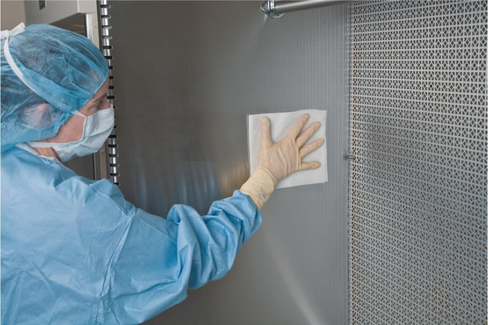

Part 2: Training
9.5 Preview the Procedural Lab
Now that you, as a sterile compounding student, have a basic understanding of the supply items used to clean a horizontal LAFW, you have the opportunity to preview—and subsequently perform—the cleaning and disinfection of this type of PEC using appropriate technique.
First, read the Preview the Procedural Lab section. Then carefully read each step of the Procedural Lab section. Next, reinforce your understanding by watching the demonstration video. Once in the lab, your instructor will demonstrate the procedure, and then you will perform the procedure by following the steps in the Procedural Lab section. After sufficient practice, you will complete the competency assessment that will be observed by your instructor.
Note: This procedural lab requires the use of a horizontal LAFW. For pharmacies that do not have this type of PEC, sterile compounding personnel should consult the equipment manual provided by the PEC’s manufacturer and their facility’s SOPs to determine which procedures may need to be adjusted to suit their PEC.
Anteroom Preparatory Procedures
Prior to entering the buffer room, you need to complete several preparatory steps in the anteroom. These procedures include gathering and staging supplies and donning garb.
Gathering and Staging Supplies
First, gather the supplies that you need for PEC cleaning and disinfection procedures: sterile, low-lint wipers; sterile water; EPA-registered, one-step disinfectant cleaner; sterile 70% IPA; a permanent marker; and a pen. Then don gloves to stage these supplies before moving them to the clean side of the anteroom. To complete this task, use sterile, low-lint wipers saturated with a sporicidal agent, an EPA-registered disinfectant, or sterile 70% IPA. After wiping the exterior surface of these supply items, place them into a transport cart or bin that has been recently wiped using a similar cleaning and disinfection process. This process removes dust or other contaminants from the exterior surfaces of the supply items.
Donning Garb
Now that you have gathered your supplies, you must don garb, a requirement for working in a buffer room. Don shoe covers; a head cover and, if necessary, a facial hair cover; a face mask; a gown; and sterile gloves.
Due to time constraints, you will not perform hand-washing procedures during this procedural lab. Keep in mind that, in sterile compounding practice, hand-washing procedures are mandatory and must be performed. If you are performing this procedural lab in a working cleanroom suite, you must perform all hand hygiene and garbing procedures before entering the buffer room.
Buffer Room Preparatory Procedures
When preparing to clean and disinfect a PEC, you must follow your facility’s SOPs. These procedures include proper hand hygiene and garbing as well as the application of sterile 70% IPA on your sterile gloves prior to having your hands enter the PEC. (For additional assistance on hand hygiene and garbing, refer to Chapter 8 of this textbook.) Once these preparatory procedures have been completed, the PEC cleaning and disinfection process may begin.
Arranging Supplies in the PEC
Upon entering the buffer room, place the supply items on a clean table or cart. If there is an outer wrap that covers the package of sterile, low-lint wipers, remove the outer wrapper and place the package in the outer six-inch zone of the PEC. Discard the outer wrapper into the waste container. If there is an outer wrapper on the bottle of sterile, 70% IPA, remove the outer wrapper and place the bottle in the outer six-inch zone of the PEC. Discard the outer wrapper into the waste container. Avoid placing the waste container in front of the PEC’s prefilter; this action could obstruct airflow into the PEC.
Horizontal LAFW Cleaning and Disinfection Process
You are now ready to begin the horizontal LAFW cleaning and disinfection process. Apply sterile 70% IPA to your sterile gloves and rub your gloved hands together to wet the entire surface of each glove. Allow your gloves to dry naturally.

Move the package of sterile, low-lint wipers from the outer six-inch zone to the DCA. Open the package, remove one wiper, and place it in the DCA. Then close the package and place it on the cart. Next, within the DCA, open the cap on the sterile 70% IPA and pour a small amount of liquid onto the wiper. The amount of liquid should be enough to saturate the wiper but not so much that it pools on the PEC’s work surface. When the wiper is saturated, recap the bottle, place it on a nearby table or cart, and label the bottle with the BUD. Pick up the wiper and wipe the exterior surface of the sterile water bottle. Place the sterile water bottle in the DCA and discard the wiper into the waste container.
Open the package of sterile, low-lint wipers, remove one wiper, and place it in the DCA. Then close the package. Open the bottle of sterile water and pour a small amount of liquid onto the wiper. The amount of liquid should be enough to saturate the wiper but not so much that it pools on the PEC’s work surface. When the wiper is saturated, recap the bottle, place it on a nearby table or cart, and label the bottle with the BUD. Pick up the wiper and remove any visible residue that is present on the interior surfaces of the PEC. Discard the wiper into the waste container.
Open the package of sterile, low-lint wipers, remove six wipers, and place the stack of wipers in the DCA. Then close the package and place the package on a nearby table or cart. Move the one-step disinfectant cleaner to the outer six inches of the PEC and, if there is an outer wrap on the bottle, remove the sterile outer packaging, then place it in the DCA and open the bottle and pour a small amount of liquid onto the stack of wipers located within the DCA. The amount of liquid should be enough to saturate the wipers but not so much that it pools on the PEC’s work surface. When the wipers are saturated, recap the bottle, place it on a nearby table or cart, and label the bottle with the BUD.
Before you begin the cleaning and disinfection process, remember to adhere to the following procedures:
- Do not allow your head or upper body to enter the PEC. Use a cleaning tool if you cannot reach all surfaces of the PEC. Cleaning tools are generally available from your PEC manufacturer or cleaning and disinfecting agent supplier. They allow you to attach a sterile, low-lint wiper or special sterile, low-lint pad to a handle.
- Use a new sterile, low-lint wiper for each section of the horizontal LAFW because the wiper becomes contaminated when it reaches the outer six-inch zone of the PEC.
- Overlap your cleaning strokes so that no surface of the horizontal LAFW is left unclean. Cleaning strokes should sweep from one edge of the PEC to the other edge in a single motion. Avoid using short, staccato, back-and-forth strokes as these types of strokes create turbulence in the airflow and may cause you to miss small portions of the PEC during the cleaning and disinfection process.
To begin, select the first wiper from the top of the stack. Carefully clean the screen, sometimes called a grill or grate, covering the HEPA filter. Be careful not to let liquid enter through the openings of the screen. Avoid applying too much pressure to the cleaning strokes as this can cause tearing of the wiper and can damage the HEPA filter. Starting at a top corner of the filter screen, use overlapping strokes and move from side to side and then from top to bottom. Then place the used wiper in the waste container.
Next, select a second, clean wiper from the top of the stack. Use this wiper to clean the ceiling of the horizontal LAFW. To do so, use overlapping, side-to-side strokes and move from the inside of the PEC’s ceiling (the area closest to the HEPA filter) to the outer edge of the PEC’s ceiling. Then perform a final cleaning stroke down the front edge of the PEC. Place the used wiper into the waste container.
Then select a third, clean wiper from the top of the stack. Use this wiper to clean the hang bar and hooks of the horizontal LAFW. Then place the used wiper into the waste container.
Next, select a fourth, clean wiper from the top of the stack. Use this wiper to clean the first side panel of the horizontal LAFW. Start the procedure by placing the wiper into the back upper corner of the horizontal LAFW. Then use overlapping, down-and-up strokes and move the wiper toward the outer edge of the PEC (see Figure 9.3). When you reach the outer edge of the PEC, wipe down the front edge of the PEC’s side panel. Then place the used wiper into the waste container.

View long description Hide description
The labels are as follows: side of PEC shows start pointing at top inner side and ending at lower outer side while following parellel pattern; HEPA filter; work surface; and outer edge of PEC.

View long description Hide description
The labels are as follows: side of PEC shows start pointing at left inner side and ending at right outer side while following parellel pattern; HEPA filter; work surface; and outer edge of PEC.
Then select a fifth, clean wiper from the top of the stack. Clean the opposite side of the horizontal LAFW in a similar manner. When you reach the outer edge of the PEC, wipe down the front edge of the PEC’s side panel. Then place the used wiper into the waste container.
After the side panels have been cleaned, clean the remaining section of the horizontal LAFW: the work surface. To do so, select a sixth, clean wiper from the top of the stack. Clean the work surface of the PEC by using overlapping, side-to-side strokes. Move from the inside of the PEC (the area closest to the HEPA filter) to the outer edge of the PEC’s work surface (see Figure 9.4). When you reach the outer edge, wipe down the front edge of the PEC’s work surface, and discard the wiper into the waste container.
Once the initial PEC cleaning has been completed using the one-step disinfectant cleaner, repeat the process using the sterile 70% IPA. Perform the procedure in the same order as you did with the one-step disinfectant cleaner.
Completing the Checklist and Removing Garb
After cleaning and disinfecting the horizontal LAFW, complete the PEC cleaning and disinfection checklist by recording the date, time, and your signature or initials as required. Then, in the anteroom, remove your garb in the opposite order in which you put on the items. (See Chapter 8 for step-by-step instructions on how to remove your garb.)